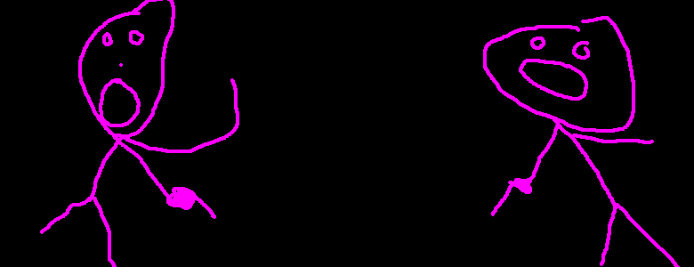

THE STORY LINE
dun...dun...dun...dunnnnn...
- Megan has explored the world, conquered all that she saw, destoryed everything
- evil , and made love to her beloved snuggle bunny...many times...many....whew..
- However, something horrible happened on one fateful night that would disrupt
- Megan's life forever(or at least for a while). While Megan was asleep with her
- dearest snuggle bunny, something horrible happened. Something almost as bad
- as throwing away two perfectly good mc.chicken sandwidches. A short, weak, crippled
- elf snuck into megan's love nest and stole her beloved snuggle bunny away. Snuggle
- bunny attempted to fend off the impressivly strong enemy but failed....badly.
- Snuggle bunny still claims that the elf was really strong however other witnesses
- say that the elf looked pretty weak....A lot of witnesses said that....anyhoo
- megan woke up from the girly screams coming from her beloved snuggle bunny as he
- was being stolen away. Megan arose with a amazon like yell and said" Let go
- of my snuggle bunny. However, she couldn't keep up with the crippled, weak, short
- elf. However, she followed the little bastards trail for many days. That was untill
- the trail faded away(actually she just got tired and decided to go to sleep). But
- during her slumber, creatures came out of the nearby grassy plains and bit her with
- their venomous catamine laced teeth and darkness took her. She strayed out of
- thought and time.stars wheeled overhead...and every moment she was asleep was as
- long as a life age of the earth. But it was not the end. She felt life in her
- again (tony clicks off lord of the rings two...). Megan got up in an unknown area.
- It had become obvious to megan on what had happened. The creatures dragged her
- somewhere else because they couldn't knaw through her impenitrable amazon silky/
- rock hard skin. However, this didn't detur megan from her quest of trying to save
- beloved snuggle bunny.